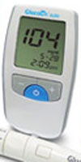

GIỚI THIỆU KPVINA
Công ty TNHH Thương mại - Dịch vụ KPVina là đơn vị nhập khẩu và phân phối độc quyền máy đo đường huyết nhãn hiệu GlucoDr tại Việt Nam. Được phát triển bởi tập đoàn thiết bị y tế Allmedicus, với hơn 60 cổ đông và 25 chuyên gia nghiên cứu chuyên ngành về hóa học, sinh học, enzymology, điện tử, bán dẫn, khoa học máy tính, cơ khí, vật liệu khoa học, ...
Xem thêm
Tự giám sát lượng đường trong máu (SMBG) đóng vai trò quan trọng trong kiểm tra, kiểm soát bệnh tiểu đường của bạn. Một thời gian dài nghiên cứu cho thấy, giữ mức độ đường trong máu bình thường để giảm bớt nguy cơ phức tạp đến hoặc nhiều hơn 60%.
Xem thêm
Giới thiệu máy đo đường huyết GlucoDr Auto
Tự giám sát lượng đường trong máu (SMBG) đóng vai trò quan trọng trong kiểm tra, kiểm soát bệnh tiểu đường của bạn. Một thời gian dài nghiên cứu cho thấy, giữ mức độ đường trong máu bình thường để giảm bớt nguy cơ phức tạp đến hoặc nhiều hơn 60%.
Cho đến nay, xu hướng công nghệ SMBG đã được di chuyển từ hệ thống máy phản xạ sinh học đến hệ thống máy cảm biến sinh học. Các hệ thống cảm biến sinh học mất lợi thế nhỏ hơn khối lượng máu cần thiết, nhanh chóng đo lường thời gian, không lau hay không làm sạch các dụng cụ, tiêm máu tự động, ...
Xem thêmThông tin bảo hành sản phẩm GlucoDr
Cùng với đơn vị sản xuất Allmedicus với thương hiệu máy đo đường huyết GlucoDr, công ty Khang Phú Vina là nhà nhập khẩu và phân phối sản phẩm sẽ cung cấp dịch vụ bảo hành sản phẩm.
Sản phẩm GlucoDr được bảo hành tại :
Văn phòng đại diện chính cho hãng Allmedicus - GlucoDr tại TP. Hồ Chí Minh
Công ty TNHH Thương Mại Dịch Vụ Khang Phú Vina
Add: KK11Bis, Nguyễn Giản Thanh, Cư Xá Bắc Hải, P.15, Q.10, Tp.HCM
Tel: 08 3868 3156 - Fax: 08 3868 3155
Bị tiểu đường nên bổ sung vitamin C
Khi điều trị cho bệnh nhân tiểu đường tuýp 1 bằng insulin và vitamin C hay thuốc giảm huyết áp Telmisarten thì các gốc tự do giảm rõ rệt. Điều này cũng đồng nghĩa sẽ giảm thiểu được một số biến chứng của bệnh tiểu đường.
Xem thêmĐại Lý Phân Phối
Đối với khách hàng mua lẻ:
Vui lòng liên hệ các cửa hàng, đại lý thuốc tây để mua máy đo đường huyết GlucoDr và được tư vấn sử dụng.
Đối với khách hàng mua sỉ:
Vui lòng liên hệ trực tiếp với chúng tôi qua địa chỉ:
Văn phòng đại diện chính cho hãng Allmedicus - GlucoDr Auto tại TP. Hồ Chí Minh
Công ty TNHH TM DV Khang Phú Vina
Add: KK11Bis, Nguyễn Giản Thanh, Cư Xá Bắc Hải, P.15, Q.10, Tp.HCM
Tel: 08 3868 3156 - Fax: 08 3868 3155
Email: info@kpvina.com.vn - Website: www.kpvina.com.vn